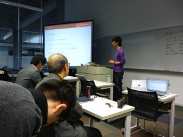
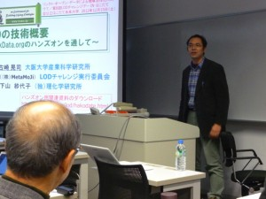
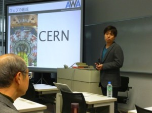
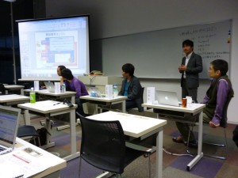

技術コラム第7回：第8回LODチャレンジデー in はこだて
12月15日(土)に、公立はこだて未来大学 LODラボ主催、LODチャレンジ実行委員会共済で開催されました「LODチャレンジデー in はこだて」について、はこだて未来大学の6名の学生さんが参加レポートを寄稿して下さいました。
最初は不破さんからのレポートで、全体を通した感想について書いて下さっています。
不破崇行さん
12/15日に函館市で行われた”第8回LODチャレンジデー in はこだて”に参加してきました。イベント当日の様子を一参加者の視点からお伝えします。
実のところ、私は今までLODに参加したことが無かったため私にとっては今回が初めてのLODイベントでした。参加するまでLODについては殆ど知らず、案内メールが来て色々調べた程度の知識しか持ちあわせていませんでした。
そんな状態で今回参加させていただいたのですが、LODに対して一気に興味が湧いて気づけばLOD Challenge 2012にエントリーするべく準備を進めるまでに至りました(どの部門に出るかは伏せておきます)。
というわけで、お話を聞いた感想を書いていきます。
第一部
W3Cの深見嘉明さんによる、”W3Cを含む背景と世界的なトレンドのご紹介”でした。
“W3C”というのは簡単に言ってしまうとWebの標準化団体で、HTMLやCSS等の規格を勧告している団体です。最近ではHTML5で注目を集めています。そんなW3Cの設立からの歴史から話が進み、どのような経緯でWebが誕生し発展していったかを解説していただきました。
普段我々はパソコンなり携帯電話(今ではスマートフォンでしょうか)でWebページを日常的に閲覧するようになり、日常生活と親密な関係を持ちつつあります。そんなWebの歴史や「これからどのように進んでいくのか」をお聞きすることができました。
第二部
小林巌生さんの発表で、”国内および地域自治体の動向”というタイトルでした。「オープンデータは実際にどのような場所で使われているのか」という話がメインでした。
2012年は「オープンデータ元年」で政府でもオープンデータを積極的に活用していこうという流れになっています。鯖江市と会津若松市などの具体的な取り組みを挙げ、地方自治体でどのように活用されているのかというお話を聞くことができました。 横浜市の場合では、オープンデータを集計することで、自分が納めた税金が「どこで使われているのか？」を調べることができるツールが公開されているそうです。膨大なデータを、私たちの生活に役立てることができる具体例を色々紹介していただきました。

そしてLODの技術概要とLinkDataハンズオンがありました。今回は函館市ホームページで公開されているデータをベースに実際にLOD形式に変換する内容でした。
実際に作成までやってみたのですが、手順がさほど多くなく、手軽にできるなぁという感想です。

また途中では、本学におけるLODの取り組みを紹介する時間があり、数名の未来大生が発表を行いました。未来大学では「観光」を基軸にLODへアプローチしています。函館市中央図書館の歴史資料をデジタル化する”デジタルアーカイブ”等に取り組んでいます。
最後にはパネルディスカッションがあり、参加者を交えてのディスカッションがありました。今後LODはどのような方向へいくのか？という事を聞くことが出来、非常に楽しかったです。

元々私はクローリングやスクレイピング等(Apache NutchやApache Solr等を使っています)、元々検索エンジンで活用されている技術を元にデータや情報を紡ぎだす研究をしているのですが、今回の発表を聞いていて「自分でも何かできることがあるのでは？」と思いちょうど今、LOD Challenge2012に応募するために準備をしています。素晴らしい機会をいただけたと思っています。
続いて、5人の学生さんが分担してリレー形式で、参加レポートをまとめて下さいました。
前田実優さん
12/15に函館で行われた「LODチャレンジデー in はこだて」のイベントにスタッフとして参加させて頂きました。今回のイベントでは、当日は募集人数を超えた41名の参加者が集まり、第一部ではLODの地域自治体の取り組みについてのご紹介やLODの作成を体験するハンズオンの実施、第二部では講演者の方々を交えたパネルディスカッションが行われました。その中で、未来大学からは函館のLODを用いた観光情報やデジタルアーカイブなどの有効活用に向けた取り組みについて紹介させていただきました。
LODのプロジェクトに携わっている者としましては、今回のイベントは非常に興味深いお話を聞かせていただき大変有意義な時間でした。その内容について、少しご紹介させて頂きます。
最初は、「LODはWebと世界をどのように進化させてきたか」と題して、W3Cを含む背景と世界的なトレンドのご紹介を慶応大学の深見嘉明さんからお話して頂きました。

LODはデータの共有を目標とする、World Wide Webの進化の過程で必然的に出てきたものです。そこでまず、Webの創成についてお話されていました。論文を紙で管理していた時代、CERNという研究機関では広大な土地に研究者が点在しているため、必要な知識の情報がどこにあるのかわからない、という問題があったそうです。そこで、各自の研究成果を簡単に共有・閲覧する仕組みとしてWebが誕生しました。
その後Webは発展し、人間が目で見て読んでわかるような、文字や写真、動画等の情報を共有できるようにできるようになりました。しかし、そのような情報の形では、パソコンで自動処理しにくいという問題が残っていました。
21世紀になり、アプリケーションやソフトウェアで扱えるようなデータが増えてきました。見るためだけのWebだったのが、データを共有するためのWebへと進化してきています。その象徴的な単語がLODということでした。
アプリケーションに直接利用できるようなRaw Dataと呼ばれる素のデータを公開することで新たな価値が生まれるという考えをティム・バーナーズ・リーが、主張しました。それと同時期に米国や英国政府でオープンガバメントとしてLODの取り組みが始まり、LODが注目されるようになりました。
共通のフォーマットでデータやアプリケーションを作成することで、世界中で利活用される可能性があります。また、LODによるオープンガバメントに取り組むことで、データを個々の観点で処理や加工ができます。それにより、アプリケーションの地産地消を実現可能です。今までは、データの供給者が、エンドユーザに情報を届けるまでを行わなければいけなかったのですが、LODを利用することでアプリケーション開発者に委ねることもできます。みんなで負荷を分散し、コラボレーションすることであらゆるニーズに対応することが可能です。ビジネスにも発展させられるのでは、とのことでした。
LODは、その取り組みが広がっている最中だと思います。函館でもLODの取り組みを行うことで、地域を活性することができると感じました。LODの取り組みが日本や、世界で広がることで、より多くのデータを簡単に扱えるようになり、誰かにとって価値のあるものを生み出しやすい環境ができるのではないかと思います。
兵藤允彦さん
2つ目の講演は、未来大学にも何度か来校なさっていている小林巌生さんが行ってくださいました。小林さんは、有限会社スコレックスの代表でもあり、NPOリンクト•オープン•データ•イニシアティブの副理事長でもあります、小林巌生さんが行ってくださいました。講演のタイトルは、「日本のオープンデータ動向」というもので、近年の日本におけるオープンデータの広がりについて説明してくださいました。
小林さんの講演の様子
まず始めに、最近の国や地方のオープンデータに関する説明をしていくださいました。政府は、「2012年は日本におけるオープンデータ元年」と宣言し、総務省が広報紙で取り上げたり、オープンデータ流通推進コンソーシアムの開催をしたりとオープンデータの普及を推進する流れとなっているそうです。また、自治体の中で特にオープンデータに力を入れている鯖江市や横浜市などの例も上げられていまいした。鯖江市では、自治体が所有しているデータをXMLやRDF形式で公開していたり、LODチャレンジ2011で受賞した経歴があることなどをご紹介されていました。また、横浜市については、横浜オープンデータソリューション発展委員会に関するお話やサイエンス分野におけるオープンデータの広がりについて紹介してくださいました。
次に、オープンナレッジファンデーション日本グループやLODチャレンジJapan、DBpedia Japaneseなどといった日本のオープンデータの普及を支えるコミュニティについても紹介されていました。その中で、オープンナレッジファンデーション日本グループが開発したアプリケーションの紹介がありました。それは、自分の年間収入を選ぶと、それに応じた横浜市における年間市税が表示され、その市税が、1日当たり、どこで、いくら使われているかを一覧表示してくれるものだそうです。
そして最後に、横浜LODプロジェクトプロデューサーとしても活躍している小林さんが手がけられたヨコハマ•アート•LODに関する説明もしてくださいました。
私はこの講演を聞いて、オープンデータの重要性をさらに知ることができた気がします。講演でも述べられていましたが、国や地方が所持している情報をオープンにするべきであるという世論の傾向は年々強くなっているように思います。そのような情報を2次利用しやすい形式でオープンにしていこうという取り組みはとても良いことだと思います。このような傾向が、今後様々な自治体で強まることを期待したいです。また、このような活動がこの函館でも活発に行われ、鯖江市や横浜市などのようなオープンデータの先進地になることも強く望みます。そして、それを実現するために私も微力ながら活動をしていきたいと思います。
山田亜美さん
続いて大阪大学の古崎先生よりLinkData.orgを利用した簡単なLODのハンズオンセッションが行われました。

古崎先生よりLinkData.orgの紹介
LinkData.orgとはテーブルデータからRDFデータを簡単に作成できるサービスです。このLinkData.orgのサービスを利用して、実際に函館市のデータセット作成を行いました。用いたデータは、函館市がWebサイトで公開している公共施設や観光地の場所など様々なカテゴリのものとなっています。
それぞれテーブルデータが割り当てられ、皆さん黙々とデータセットの作成に取り組んでいました。私は「歴史ツアーガイドコース」のデータを担当しました。慣れない作業に戸惑うこともありましたが、セッションが終わる頃には私を含めて大体の方がLinkData.orgにデータセットを登録することができていたと思います。
また、LinkData.orgは地方自治体のデータセットを共有するCityData.jpと連携しており、皆さんがハンズオンで作成した函館のデータセットを登録したところ、なんと函館市がランキング第三位になりました。
CityDataのランキング
このLinkData.orgのサービスを利用することで、サーバーを持たない方でもデータセットを公開することができます。手軽に作成することができるので、ぜひ皆さんデータセットの作成にチャレンジしてみてください。
高橋正輝さん
続いて公立はこだて未来大学からLODの取り組みについて発表しました。その内容についてご報告します。
公立はこだて未来大学では、地域貢献を目的とした教育と研究の両面の活動を進めています。その中で観光情報と歴史資料(デジタルアーカイブ)のLOD化とその活用をテーマとした三つの取り組みについて発表しました。
高度ICT演習観光系の山田さんの発表
一番目に高度ICT演習観光系プロジェクトから学部三年の山田亜美さんが発表しました。高度ICT演習観光系プロジェクトは函館の観光情報のLOD化の促進を目的とした取り組みを進めています。このプロジェクトは異なる学年の学生16名で構成され、メンバ全員がLODに関する知識ゼロの状態で2012年5月からスタートしました。私もこのプロジェクトに所属し、LODを学び始めました。はじめに、昨年度開催されたLODチャレンジ Japan 2011のエントリー作品を調べ、メンバ全員がプレゼンテーション形式で報告することでLODの活用方法について学びました。そして、函館に訪れる観光客や、観光情報のデータを所有する人々、観光サービスを提供する(データを活用する)人々にとってのメリットを考えながら、どのようなデータをLODにすることで観光を支援するアプリを作成できるか検討しました。その結果、函館市の「函館市公式観光情報サイトはこぶら」と「はこだてフィルムコミッション」、函館工業高等専門学校・株式会社ノース技研の「近代化遺産ポータルサイト」のそれぞれのWebサイトにある情報のLOD化を目指すこととしました。そして11月には函館工業高等専門学校・株式会社ノース技研に近代化遺産の情報のLOD化の提案を行いました。現在は、観光情報と映画ロケ地情報、近代化遺産情報のLODの試作を行っています。また、それらのLODを組み合わせ、観光客の観光を支援する地図アプリ「函館Map+(プラス)」の開発も進めています。そのアプリで函館市にLODの有効性を伝えるだけでなく、観光客に観光を支援するアプリとして提供することを目指しています。
デジタルアーカイブ研究センターの高橋の発表
二番目にデジタルアーカイブ研究センターから私高橋が発表しました。デジタルアーカイブ研究センターでは、函館の散在している歴史資料をLOD化して編纂することを目的とした研究を進めています。2003年から公立はこだて未来大学は、函館市中央図書館に所蔵されている大量の歴史資料のデジタルアーカイブ化を進めてきました。現在、写真や地図、ポスターなどがそれぞれ目録(メタデータ)と合わせて「函館市中央図書館デジタル資料館」のWebサイトで公開されています。それらの資料の中で最も多く存在するのが写真です。写真は、様々な時代の人物や建造物などの被写体を含んでおり、被写体間に歴史的な関連があると考えられます。大量の写真間を歴史的な関連で結び付けることで地域の変遷を記録することが可能となります。しかし、現状の写真にはメタデータが十分に整備されていないため、写真間の関連を見出すことが困難です。そこで、函館市の歴史年表である「函館市史年表編」や人物についての文献である「はこだて人物誌」を利用することで、今まで見出せなかった歴史的関連のある写真間が結びつく可能性があります。例として、「大正五年十月十五日挙行 成聖式記念絵葉書 函館ハリストス正教会」のメタデータが付加されたハリストス正教会と人物が写っている写真があります。また、「主教セルギイ師[ハリストス正教会]」のメタデータが付加されたセルギイ師(人物)が写っている写真があります。二枚の写真のメタデータには共通して「ハリストス正教会」が記述されていますが、写っている人物についての関連性は外見からはわかりません。そこで、前者の写真に付加されている日付「大正五年十月十五日」を歴史年表で調べます。すると、歴史年表の「大正五年十月十五日」には「ハリストス正教会の成聖式が行われ、セルギイ神父が来函する。」と記述されています。従って二枚の写真の人物は同じセルギイ師である可能性があります。このように、歴史年表を利用することで、写真間を歴史的関連で結びつけることができます。そこで、散在している函館市の歴史資料をそれぞれLODとして公開し、リンクする事で函館市の歴史資料の編纂を目指しています。また、様々な地域の歴史資料のLODとリンクし、地域の記録に新たな価値を付加していくことも検討しています。歴史資料をLODとして公開することは、歴史研究者や学芸員の情報収集の利便性の向上につながるだけでなく、観光サービスとして活用することで、観光客の満足度の向上や地域の歴史を市民に認識してもらうための手助けとなるとも考えています。
LODラボの山口さんの発表
三番目は、LODラボの山口琢さんと藤原哲さんの研究です。発表者は、昨年度のLOD チャレンジ Japan 2011でメディア・イノベーション賞を受賞した山口さんです。山口さんは、LODを活用してユーザが興味のある情報を検索できる仕組みの構築を進めています。日常においてWebで情報検索しているうちに、知って良かったと思う情報に出会うことがあります。しかしそれは必ずしもユーザが意図的にその情報を探していたとは限りません。そのようなユーザが興味のある情報をLODから情報推薦や探索のロジックで取得し、ユーザに提示するシステムの構築を行っています。発表では、観光情報の推薦を例に挙げ、ピンポイント・リマインダーと名付けたアプリケーションのデモンストレーションを行いました。このシステムの利用者には企画者、データ提供者、ユーザという三者が存在します。デモンストレーションでは、石川啄木の情報で集客をしたい人(企画者)、石川啄木について知って欲しい人(データ提供者)、石川啄木に興味のある人(ユーザ)の三者を例として挙げました。企画者が石川啄木の情報で集客することを提案し、データ提供者が、システムに石川啄木についてのRDFを登録します。システムには他にも様々なデータが蓄積されており、その中から興味のあるキーワードとして「石川啄木」を選択したユーザに対して、集客のための情報を推薦できるという仕組みです。
ピンポイント・リマインダーを利用しているユーザが石川啄木の「一握の砂」をWebブラウザで読んでいると、「青柳町」という単語にリンクが張られているのを発見します。リンク先は、「函館市公式観光情報サイトはこぶら」に掲載されている石川啄木と函館の関係を綴った記事でした。函館の青柳町に啄木の歌碑があると知ったユーザは、一度訪れてみたいと思うようになるでしょう。このようなシナリオで、システムのデモンストレーションが行われました。山口さんは、こういったシーンでユーザに満足してもらえる情報を提示するために、RDFで表現される意味的な関連を活用したロジックを検討しています。
未来大学では、データに関係する様々なステークホルダの視点に立ってLODサービスをデザインしています。これからも函館市全体が幸せになれる情報公開と活用を目指して行きます。
藤原哲さん
第２部は「参加型デザインによるLODを通した地域活性化」というテーマで、LODと観光情報の関わりについてディスカッションが行われました。まず始めに、観光やイベント情報のWebによる提供に関して研究している、北海道大学の川村先生から研究の紹介がありました。

川村先生の研究は、札幌市民の求める情報のニーズに対して、行政の情報では手続きを踏んだ情報で正確ではあるが、扱う情報が狭く件数が集まらないので、TwitterなどSNSを利用して民間データの公開を行っているというものです。
そこから議論になったのは、”民間の情報をLOD化する際にどうすればいいか”という問題です。LODは、情報を比較的自由に発信することが出来ますが、そこで集まる情報をうまく利用するためには検索者がある程度その使い方に慣れなければ使えないものになってしまうとのことでした。その問題を解決するための1つの方法として、行政が様々な分野で情報のまとまりを作るための芯(ハブ)になるというものです。芯を起点に情報を集めることがLODの理想の姿で、そこからリンクしたソーシャルメディアも活きてくるという、非常に勉強になるワークショップでした。
基調講演をしてくださった皆様、ワークショップで様々な取組や研究の紹介とディスカッションを展開してくださった皆様、貴重な時間をありがとうございました。
今回のLODチャレンジデーを通じて、地域と密着している未来大学からどのようなアイデアが生まれるでしょうか。LODチャレンジまであと1ヶ月、はこだてから皆さんが驚くようなLODプロジェクトが誕生することを期待していてください。
はこだて未来大学の学生さんの皆さん，詳細なレポートをありがとうございました。